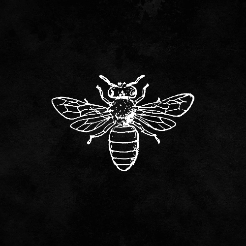

I’m Xpid3r, passionate about cybersecurity and hacking. Follow my journey as I explore security challenges and share knowledge with the community.
Skills & Expertise:
- CTF participant, skilled in web security, cryptography, reverse engineering, and network security.
- Experience in finding and reporting vulnerabilities through bug bounty programs.
- Proficient with tools such as Burp Suite, Metasploit, and Wireshark.
- Collaborated with global security researchers and shared knowledge.
- Experience in exploit development, penetration testing, and vulnerability assessments.
- Ranked highly on platforms like Hack The Box and TryHackMe.
Notable Achievements:
- Discovered critical vulnerabilities in popular applications.
- Contributed to open-source security tools benefiting the cybersecurity community.
Follow me on Twitter: @Xpider_exe